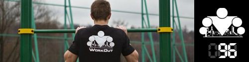

100 Дневный воркаут
<==== Вернуться к оглавлению
День 96. ТУРБО комплекс ЭПСИЛОН

К чему лишние слова? Смотрите сегодняшний комплекс и вперёд за дело!
После хорошей разминки выполните 3 раза упражнение
Планка
по 30-60 секунд статической нагрузки с перерывами 10-20 секунд.
Несколько важных моментов о которых следует помнить:
Ступни
. Чем они ближе друг к другу, тем сложнее держать равновесие и тем выше нагрузка на мышцы кора. Можно вообще поставить одну на другую или держать одну ногу в воздухе, если вы настоящий воркаут-ниндзя!
Ноги
. Должны быть ровными, прямыми и под напряжением!
Ягодицы.
Тоже должны быть напряжены в течение всего времени выполнения упражнения! - вместе, так сложнее держать равновесие и больше нагрузка на мышцы кора.
Поясница.
Должна быть плоской, а это значит что её нельзя ни округлять, ни прогибать! Мнение со стороны, фотография или видео запись подскажут вам, если вы делаете ошибки! Прямая поясница является индикатором того, когда заканчивать держать планку. Если чувствуешь. что поясница проваливается вниз, то нужно прекращать. Потому что именно мышцы кора и удерживают ее ровной, а когда они уже не справляются, то нагрузка переходит на позвоночник (некоторое время еще хватает сил себя поддерживать за счет плечей и ягодиц, но это уже нарушенная техника).
Локти
. Должны быть строго под плечевыми суставами!
Эти 3 подхода пролетели и мы приступаем к круговому комплексу. Как обычно, 3 упражнения, 5 кругов, никакого отдыха!
Упражнение №1. Отжимания с узкой/широкой постановкой рук
. Чередуем по кругам, получается узкая, широкая, узкая, широкая, узкая. Ну или широкая, узкая, широкая, узкая, широкая, кому как больше по душе. 10-20 повторений в зависимости от подготовки.
Упражнение №2. Приседания "Сумо"
.
Количество? 10-30 повторений.
Упражнение №3. Подтягивания + вис.
Подтягиваемся любым хватом по собственному желанию (можно и чередовать хваты), 5-10 раз, после чего ещё висим на турнике (после каждого подхода) 5-10 секунд.
======> День 97. ТУРБО комплекс ЗЕТА